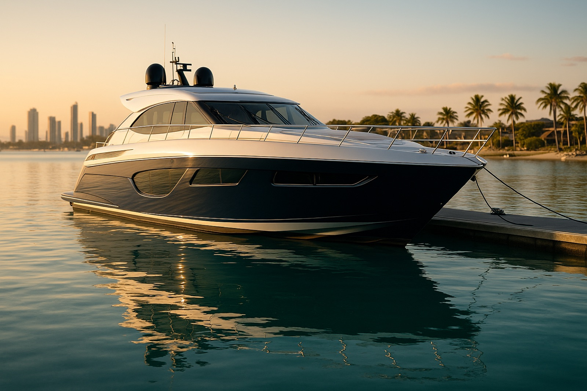
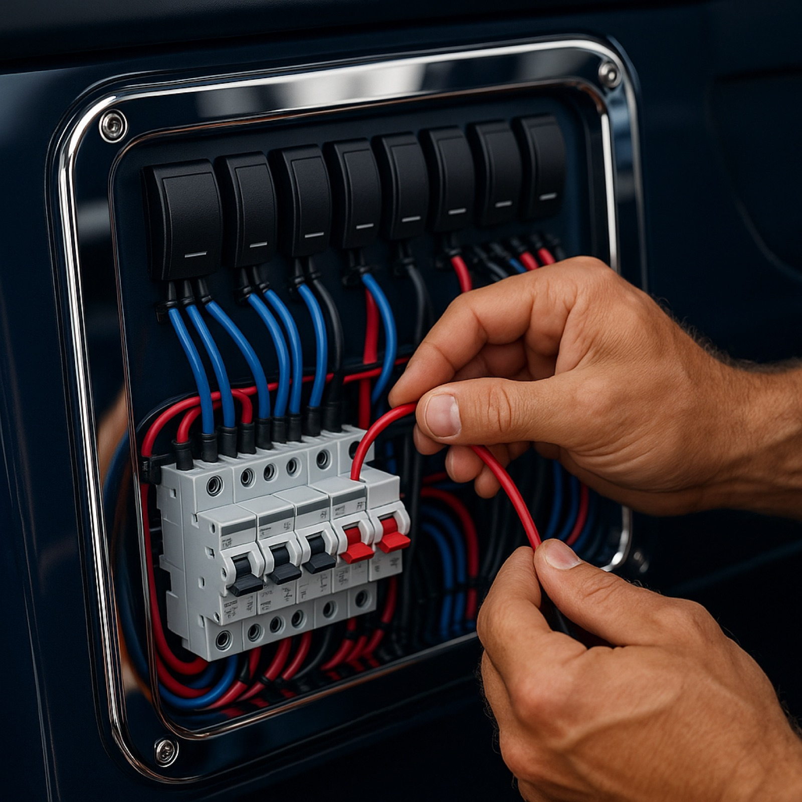
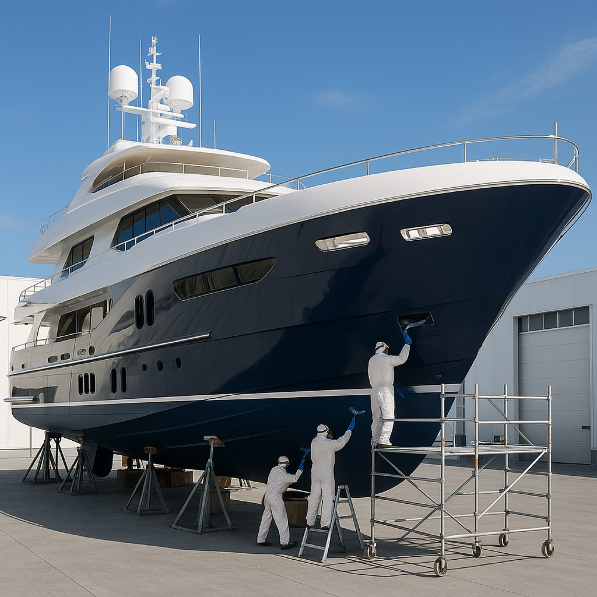
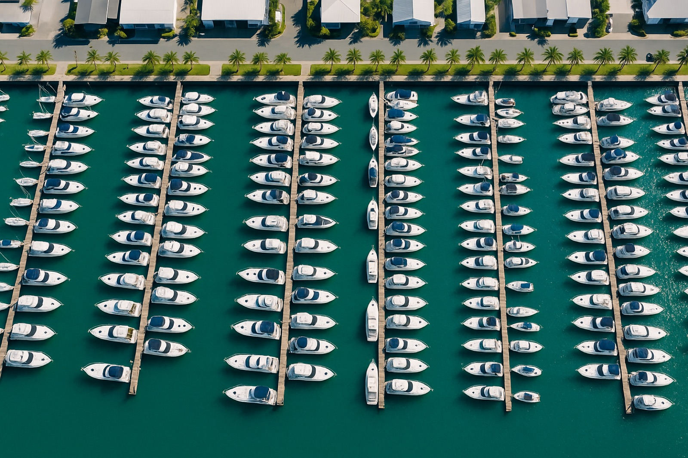
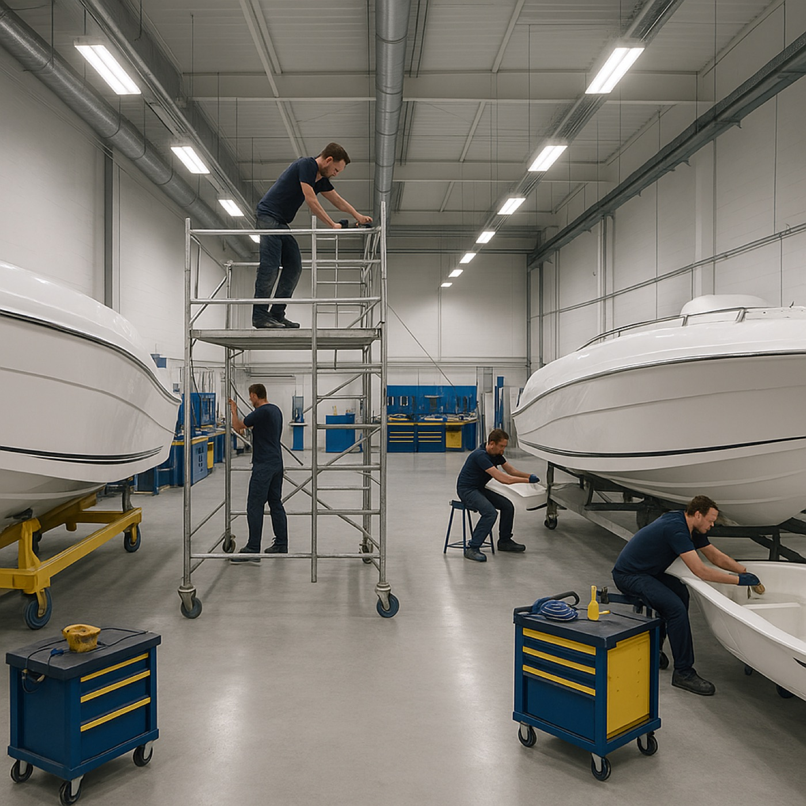
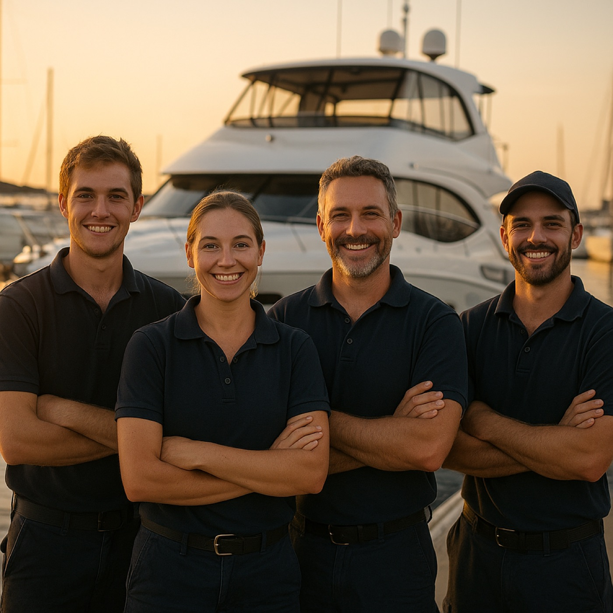
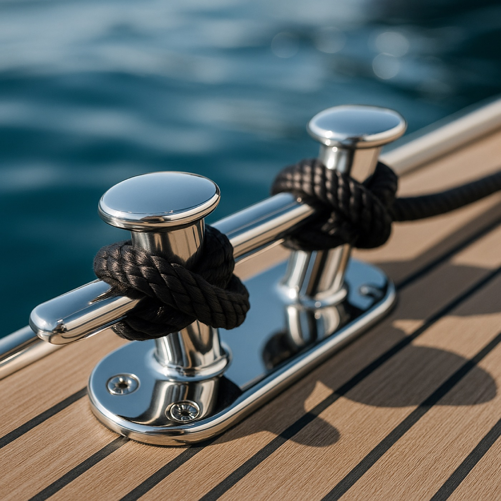

From compact runabouts to ocean-going superyachts — engine, electrical, structural and project work, all run from our Coomera Marina base.

Routine service, full electrical refit, complex structural rebuild — delivered to commercial standard with private-yacht finish.
Service, diagnostics, rebuilds and repowers — inboard, outboard, sterndrive and shaft drive. Diesel and petrol, single and twin.
Learn more →
02Wiring, switchboards, lithium & AGM banks, inverters, navigation, comms and shore-power. ABYC and AS/NZS 3004 compliant.
Learn more →
03Fibreglass, gelcoat, osmosis, antifoul, keel and rudder repair, deck recore, fairing and topcoats. Survey-grade workmanship.
Learn more →One contact for refits, restorations and new commissioning — scopes, suppliers, slipway bookings and sea trials handled.
Learn more →
Coomera Marina is one of the largest dry-berth and refit facilities on the Gold Coast — and it's where we work, every day. That gives us direct access to slipways, hardstand, travel lifts, undercover bays and a network of specialist trades all on one site.
For owners in Brisbane, the Broadwater or up the Coomera River, that means one gate, one team, one bill — and your boat back in the water on schedule.
No surprises, no scope creep — just clear scope, fair pricing and a finish you can be proud of.
We come aboard, document the work, photograph everything and write you a fixed-price proposal.
We book your slipway, lift and bay at Coomera Marina around your boating calendar.
Daily updates, photos and milestone sign-off. One project manager, accountable to you.
Commissioning, sea trial, full handover pack and aftercare warranty before sign-off.
Same crew, same quality — the size only changes the schedule.
Servicing, repower, gel coat refresh, electronics and trailer-recovery work.
Full mechanical, electrical and finish work — antifoul, refits and rolling maintenance.
Major refits, structural work, owner-spec finishes and dedicated project management.



Booked them for a routine service and ended up handing over the whole refit. Photos every Friday, on the date they promised, no nonsense.
Engine room looked better when we picked her up than the day she was launched. Thorough crew — they actually care.
Insurance survey job, tight timeline. They scoped it Tuesday, slipped Thursday, back in the water 11 days later. Top tradesmen.